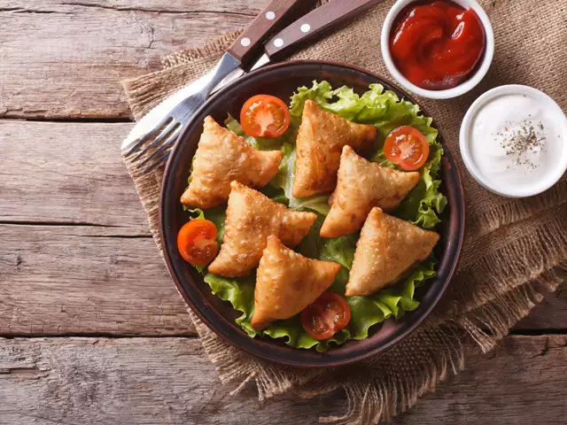
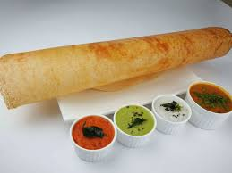
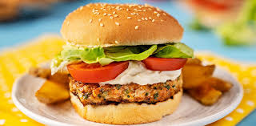

AKSHYA RESTAURANT
veg menu
-
gobi manchurian
Cauliflower manchurian is one of the most popular manchurian dishes from Indo chinese cuisine. Gobi means cauliflower in hindi & manchurian is a sweet, tangy & slightly spicy sauce made with chilli sauce, vinegar, ginger & garlic.
price=250/-
see more

-
Samosa
Samosas are a popular entrée, appetizer, or snack in the cuisines of South Asia, the Middle East, Central Asia, East Africa and their South Asian diasporas. Samosas with chutney in India.
price=180/-
see more

-
dosa
Dosa is high in carbohydrates and contains no added sugars. As its key ingredients are rice and black gram, it is a good source of protein. A typical homemade plain dosa without oil contains about 112 calories, of which 84% is carbohydrate and 16% is protein.
price=80/-
see more

-
pizza
This vegetarian pizza recipe will delight vegetarians and carnivores alike. It's fresh and full of flavor, featuring cherry tomatoes, artichoke, bell pepper, olives, red onion and some hidden (and optional) baby spinach. You'll find a base of rich tomato sauce and golden, bubbling mozzarella underneath, of course.
price=150/-
see more

non-veg menu
-
chicken biriyani
Biryani is a celebratory rice and meat dish cherished in the Indian sub-continent. A traditional biryani consists of fluffy basmati rice layered over tender & succulent pieces of meat, accompanied with the mesmerizing aromas of spices, herbs & caramelized onions.
price=280/-
see more

-
chicken65
Chicken 65 is a spicy, deep-fried chicken dish originating from Hotel Buhari,[1] Chennai,[2] India, as an entrée, or quick snack. The flavour of the dish can be attributed to red chillies, but the exact set of ingredients for the recipe can vary. It is prepared using boneless chicken and is usually served with an onion and lemon garnish.
price=300/-
see more

-
chicken sandwich
A chicken sandwich is a sandwich that typically consists of boneless, skinless chicken breast or thigh, served between slices of bread. Variations on the "chicken sandwich" include chicken on a bun, chicken on a Kaiser, hot chicken, or chicken salad sandwich.
price=250/-
see more

-
chicken burger
A chicken burger is a burger served on a hamburger bun with similar condiments and toppings as found on hamburgers.[1] While most chicken burgers use breaded and fried chicken, a chicken burger may also be made of a grilled or fried patty of ground chicken.
price=200/-
see more
